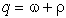
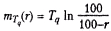

В умовах стрімкого зростання інтенсивності інформаційного обміну в сучасних мережах часто виникає необхідність у застосуванні науково обґрунтованих методів передбачення:
- наслідків змін у мережі,
- зміни топології мережі тощо.
Наслідки змін у мережі можуть оцінюватися як вплив на:
- продуктивність,
- час відповіді мережі,
- доступність тих чи інших сервісів тощо.
Бажано також вміти проводити апріорну оцінку параметрів мережі до її розгортання.
Приклад 1
В організації встановлено певну кількість робочих станцій, підключених до мережі Token Ring зі швидкістю 16 Мбіт/с.
Необхідно підключити нові робочі станції співробітників якогось відділення організації до діючої мережі.
Перед усією організацією відразу постає питання - чи зможе існуюча локальна мережа впоратися зі збільшеним навантаженням чи для такого відділення необхідно створювати другу локальну мережу і об'єднувати обидві мережі мостом?
Існують й інші випадки, у яких досить складно швидко отримати відповідь на запитання про те, наскільки зросте навантаження на мережу за тих чи інших змін, і чи впорається з ним мережа.
Приклад 2
Необхідно вперше створити локальну мережу із сервером.
Звичайно, можна, ґрунтуючись на досвіді будь-якої спорідненої організації, оцінити приблизне завантаження, що генерується кожним персональним комп'ютером, і на цій підставі оцінити необхідну продуктивність всієї локальної мережі та сервера зокрема.
Основним критерієм при оцінці сукупності параметрів мережі в даному випадку є її продуктивність у цілому.
При використанні інтерактивних додатків реального часу часу в якості основної оціночної характеристики зазвичай використовується час відповіді мережі (іноді він називається часом реакції мережі).
В інших випадках орієнтуються на пропускну здатність мережі (Нагадати з минулих лекцій).
Під час проєктування мережі необхідно мати аналітичні інструменти, що дають змогу передбачати продуктивність за моделлю мережі (Ми вже говорили про це).
Одним із таких інструментів, призначених для розроблення мережевих і комунікаційних структур, може бути аналітична модель, заснована на теорії черг.
Можна провести аналіз черг у заданій мережевій структурі, використовуючи формальний апарат теорії черг або комп'ютерні програми, наприклад пакет MODSIM, який є на кафедрі.
Приклад конкретного використання теорії
Розглянемо Web-сервер який витрачає на опрацювання одного запиту якийсь заздалегідь відомий, фіксований час - припустімо, одну мілісекунду (це буде також середнім часом, що витрачається на опрацювання).
Якщо середня швидкість надходження запитів дорівнює одному запиту в одну мілісекунду (1000 запитів на секунду), то сервер впорається з цим навантаженням.
Дійсно, це станеться в тому випадку, коли запити надходять з однаковою швидкістю (що дорівнює, очевидно, одному запиту на кожну мілісекунду).
Після надходження запиту сервер негайно обробляє його.
Після того як сервер обробив поточний запит, надходить новий запит, сервер починає його обробку і знову вкладається в час.
Більш реальна ситуація
Середня швидкість надходження запитів, як і раніше, дорівнює одному запиту на мілісекунду, але існує деяке випадкове відхилення у часі надходження конкретних запитів.
Тоді протягом будь-якого мілісекундного періоду часу може не надходити запитів узагалі, а може надійти одразу кілька запитів.
Але середня швидкість надходження запитів все одно дорівнює одному запиту на мілісекунду і є досить чітким критерієм того, наскільки завантажений сервер.
З випадковими відхиленнями, нерегулярностями у надходженні запитів можна впоратися, запровадивши буферну пам'ять, у якій протягом протягом часу зайнятості, коли необхідно обробити велику кількість запитів, сервер може зберігати невиконані запити.
Або ж, іншими словами, сервер поміщає ці запити в чергу.
Коли сервер завершить обробку поточного запиту, то, якщо не надійде наступного запиту, він візьме запит із черги і тим самим зменшить її.
З цього погляду, основним питанням під час розроблення мережевої структури є питання про те, наскільки великим має бути буфер сервера.
Для проведення оцінок продуктивності на основі наявних даних про завантаження діючої мережі або за передбачуваним завантаженням новопроєктованої мережі існують різні підходи:
- Проведення аналізу продуктивності мережі після її впровадження, ґрунтуючись на значеннях показників, які актуальні в цьому конкретному випадку;
- Виконання простого оцінювання працездатності майбутнього середовища, що ґрунтується на наявному досвіді розроблення та побудови подібних мереж;
- Розробка і застосування аналітичної моделі, заснованої на теорії черг;
- Розробка і застосування програмного забезпечення, що моделює поведінку мережі (наприклад, на нашій кафедрі магістри використовували пакет MODSIM).
Перші два варіанти можливі тільки для простих відносно мереж із незначним завантаженням і загрожують непередбачуваними наслідками - не виходить мережі з бажаними параметрами.
Проблема ще й у тому, що поведінка більшості систем при зміні завантаження буде не такою, як інтуїтивно очікувалося.
Якщо існує середовище, в якому є канали зв'язку, що розділяються, то продуктивність такої системи, як правило, експоненціально зменшується при збільшенні навантаження.
У результаті спостерігається розбіжність очікуваних значень і спостережуваних (рис. 1).
Завантаження мережі визначається часткою задіяної пропускної здатності.
Якщо розглядати міст, який здатний обробляти 1000 кадрів на секунду, то завантаження 0.5 означає швидкість передачі 500 кадрів на секунду.
Час відповіді є сума середніх часів, що витрачаються на передавання кадрів, що входять у мережу.
На рис. 1 верхня крива показує зміну реального часу відповіді мережі на каналах зв'язку, що розділяються, у разі збільшення навантаження.
Нижня крива описує очікувані розробником значення.
Дві криві збігаються тільки в межах того навантаження, з яким яким реально мав справу наш гіпотетичний розробник.
Як бачимо, досвід є досить надійним провідником тільки при половинному завантаженні мережі. При подальшому зростанні навантаження продуктивність мережі буде різко знижуватися.

Використання теорії черг дає досить точну оцінку, яка, у більшості випадків, добре відповідає дійсності.
Недоліком теорії черг є те, що під час виведення формул, на яких вона ґрунтується і які використовуються для розрахунку параметрів, що нас цікавлять, необхідно прийняти певні допущення.
Проте виявляється, що ці допущення цілком виправдані, а отримані результати близькі до тих, що виправдані, а отримані результати близькі до тих, які отримують під час програмного моделювання мережі з такими ж параметрами.
Перевагою теорії черг порівняно з моделюванням є те, що аналіз черг може бути виконаний за порівняно короткий термін (для більшості реальних ситуацій), у той час як моделювання може зайняти дні або навіть тижні - створити програмну модель, що описує необхідну ситуацію, досить непросто.
Визначення параметрів Intranet-системи з чергами
Для проведення розрахунку параметрів Intranet-систем з чергами необхідно визначити, ЩО, власне, входить до складу цієї системи і те, які параметри підлягають оцінці. Найпростіша Intranet-система з організацією черг до сервера показана на рис. 2.
Центральним елементом цієї системи є сервер, який виконує певні дії з елементами даних (пакетами, кадрами, дейтаграмами тощо).
Для розгляду цієї системи приймемо деякі допущення:
- Усі елементи даних, що надходять у систему, зберігаються, втрачених заявок немає.
- Якщо сервер у певний момент часу простоює (вільний), елемент даних обробляється негайно.
- В іншому разі елементи даних, що надходять, зберігаються в черзі.
- Після виконання сервером обробки певного елемента даних, він негайно відправляється за призначенням.
- Якщо в черзі знаходяться інші елементи даних, то один із них негайно надходить на обробку в сервер.
На рис. 2 також показано деякі важливі параметри, які використовуються під час розрахунків.
Елементи даних надходять у цю систему з деякою середньою швидкістю надходження (вона вимірюється в елементах на секунду - що відповідає класичному поняттю, про яке ми говорили - середнє число заявок за одиницю часу).
На певний момент часу деяка кількість елементів даних (заявок) перебуватиме в черзі.
Позначимо середнє число елементів даних, що перебувають у черзі, буквою , а середній час, який елементи даних повинні очікувати в черзі - символом .
Цей параметр визначений і має сенс для всіх вхідних елементів даних, включно з тими, які не очікували зовсім.
Сервер обробляє вхідні елементи даних, витрачаючи на це середній час обробки .
Цей часовий інтервал відраховується від моменту надходження елемента даних на сервер аж до обробки його сервером (тобто відправлення).
Утилізація (ступінь завантаження) сервера p - це частка загального часу, протягом якого сервер був зайнятий.
Крім того, існують ще два параметри, що характеризують систему загалом:
- середнє число елементів даних, що знаходяться у всій системі, включно з елементами даних, які почали оброблятися, та елементами, що очікують на обробку, - q
- середній час, який ці елементи даних перебувають у системі, очікуючи своєї черги або вже перебуваючи в обробці, -
Припущення:
Ємність черги нескінченна, тоді в такій системі не буде втрачених елементів даних - елементи просто очікують у черзі доти, доки не будуть оброблені.
З урахуванням цього припущення, середня швидкість відправлення елементів даних дорівнює середній швидкості надходження.
Якщо швидкість надходження елементів даних (яка визначається графіком, що входить у систему) збільшується, то, природно, зростає навантаження на сервер, а отже, і утилізація (тобто ступінь завантаження) сервера.
При р=1 (що дорівнює одиниці) сервер завантажується до межі, працюючи 100 % свого часу.
Теоретична максимальна швидкість надходження елементів даних, за якої вони можуть бути оброблені сервером, обчислюється за такою формулою:
Однак розмір черги різко зростає при входженні системи в режим насичення, прямуючи до нескінченності при р=1.
Тому на практиці зазвичай обмежують швидкість надходження даних на сервер до 70-90 % від теоретичного максимуму.
Можна показати процеси, що відбуваються в черзі, в їхній динаміці.
На рис. 3 показано графік, що ілюструє роботу системи з чергою.
По осі ординат відкладається загальна кількість елементів даних у системі.
Затінені області по осі абсцис визначають періоди часу, протягом яких сервер зайнятий.
Уздовж цієї ж осі розташовуються відрізки, що означають події двох типів:
- надходження елемента даних j (елемент надходить в момент часу .)
- завершення обробки цього ж елемента j (обробка завершується в момент часу ), коли елемент залишає систему (це те, що ми розглядали - так зв. процес народження - загибелі заявки).
Очевидно, время, которое элемент данных j находился в системе, определяется по следующей формуле: = - .
Мінімальний час обслуговування для елемента j позначається символом .

Час обробки першого елемента даних T1 дорівнює мінімальному часу обслуговування для цього елемента S1, оскільки коли перший елемент надходить у систему, вона перебуває в режимі простою, і елемент відразу ж надходить на обслуговування.
Час обслуговування другого елемента даних Т2 визначається підсумовуванням двох часів: часу, який елемент 2 очікує обслуговування в черзі і який визначається виразом (D1-A2), і часу, витраченого на його обслуговування обслуговування S2. Аналогічно, T3 = (D3-A3) = (D3-D2) + (D2-A3) = S3 + (D2-A3).
Перед тим як робити будь-які обчислення параметрів для системи з чергою, необхідно визначити умови роботи цієї системи і виявити діапазон змін параметрів. Нижче наведено умови, за яких нами буде розглядатися система з чергами:
Визначення кількості елементів даних
Передбачається, що в систему може надходити нескінченна кількість елементів даних. Це можна інтерпретувати як вимогу про те, що швидкість надходження елементів даних у систему ніяк не залежить від кількості елементів, що перебувають у системі. Якби кількість елементів даних була обмежена, це означало б, що швидкість надходження елементів у систему повинна була б бути знижена, щоб система не переповнилася.
Необмежене зростання черги
Черга може необмежено зростати. Під час розгляду Intranet-системи нами передбачатиметься нескінченний розмір черги. Отже, черга може зростати безмежно. Якщо ввести обмеження для розміру черги, то елементи даних у системі стали б відкидатися під час заповнення черги.
Якщо чергу заповнено, а додаткові елементи даних продовжують надходити в систему, то сервер нічого не зможе зробити з ними, крім того як відкидати. На практиці будь-яка черга має кінцевий розмір, але в більшості випадків теоретичне припущення про її безмежну місткість не призводить до суттєвих помилок, оскільки реальні пристрої використовують різні механізми запобігання ситуацій, за яких буде проводитися відкидання даних.
Певний порядок обслуговування елементів даних
Коли сервер стає вільним, і в черзі перебуває кілька елементів даних, необхідно визначити правила, відповідно до яких визначається елемент даних, який вибирає сервер для обробки.
Найпростішим правилом є обслуговування черги за принципом FIFO (First In, First Out - першим прийшов, першим і пішов), також відомого під назвою FCFS (First Come, First Served - першим надійшов, першим і обслужений).
Іншим можливим правилом обслуговування черги може бути бути LIFO (Last In, First Out - першим прийшов, останнім пішов). Крім того, на практиці доводиться мати справу з порядком обслуговування, що базується на часі обслуговування. На жаль, обслуговування черги, засноване на часових параметрах, досить складне для моделювання. Більш загальним випадком є обслуговування черги на основі пріоритетів, яке і буде розглядатися далі.
При цьому розглядається надходження пакетів з однаковим пріоритетом.
У табл. 1 перелічено всі параметри, визначені на рис. 2, а також додано нові параметри, які будуть використані далі під час проведення розрахунків, зокрема і для систем із більше ніж одним сервером.
Таблиця 1. Параметри, що використовуються
| Символ |
Опис
|
|
|
Середня швидкість надходження елементів даних у систему (число елементів на секунду) |
|
|
Середній час обслуговування елементів, що надійшли (у секундах) |
|
|
Стандартне відхилення в часі обслуговування елемента (у секундах) |
|
|
Утилізація сервера під час обслуговування (частка часу, коли сервер зайнятий) |
|
u
|
Інтенсивність графіка |
|
Q
|
Загальна кількість елементів даних у системі |
|
q
|
Середня кількість елементів даних у системі |
|
|
Час, який елементи даних проводять у системі (у секундах) |
|
|
Середній час, який елементи даних проводять у системі (у секундах) |
|
|
Стандартне відхилення q |
|
|
Стандартне відхилення (в секундах) |
|
|
Середня кількість елементів даних, які очікують на обслуговування в черзі (розмір черги) |
|
|
Среднее время, которое элементы данных ожидают обслуживания (в секундах) |
|
|
Середній час очікування обслуговування для елементів даних, що перебували в черзі (тобто не включаючи елементи, для яких час очікування дорівнює 0) |
|
|
Стандартне відхилення |
|
N
|
Кількість серверів |
|
|
х менше або дорівнює у r відсотках випадків (приклади див. нижче) |
На рис. 4,а показано просту модель, яка буде використана нами в разі наявності в системі декількох серверів, що розділяють одну загальну чергу.
Під час надходження елементів даних у таку систему, якщо на даний момент часу хоча б один сервер вільний, елементи даних негайно направляються на цей сервер.
Передбачається, що в системі всі сервери ідентичні. Це означає, що якщо доступні кілька серверів, то не робиться жодних відмінностей між серверами для вибору того, який буде обробляти черговий елемент даних.
Можна сказати, що ймовірність надходження елементів даних для обслуговування на різні сервери однакова.
Якщо всі сервери зайняті, то починає формуватися черга. Черга одна для всіх серверів.
Під час звільнення одного із серверів чергу залишає елемент даних, обраний відповідно до встановленого порядку.
За винятком параметра утилізації серверів, усі інші параметри, наведені в табл. 1, відповідають ситуації, показаній на рис. 2.
Якщо в системы N ідентичних серверів, а р позначає утилізацію кожного сервера, то можна розглядати як утилізацію всієї системи. Цей показник часто розглядають як інтенсивність графіка (у табл. 1 позначена символом u) або інтенсивність роботи системи. Отже, теоретична максимальна утилізація такої системи дорівнюватиме NX 100%. Максимальна швидкість надходження елементів даних у таку систему визначатиметься за формулою:

У разі декількох ідентичних серверів вибір певного сервера для обслуговування певного елемента даних не впливає на час обслуговування. На рис. 4, б показано структуру з організацією декількох черг для декількох серверів. Така зміна структурної схеми значною мірою впливає на продуктивність усієї системи загалом.
Шукані параметри можна обчислити за допомогою кількох нескладних формул, перелічених у табл. 2.
Такі формули можуть бути використані для обчислення якісних і кількісних характеристик систем із чергами, представлених на рис. 2 і 4.
Слід підкреслити, що обчислення із застосуванням цих формул мають наближений характер.
Таблиця 2. Формули для розрахунку параметрів систем із чергами
| Основні | Один сервер | Декілька серверів |
|
|
|
|
|
|

|
|
|
|
|
Ці формули можуть бути корисними для обчислення деяких параметрів під час "інтуїтивного" вибору структури системи.
Для отримання формули достатньо зауважити, що для швидкості надходження елементів даних , середній час між надходженнями елементів буде визначатися виразом .
Якщо інтервал часу T менше інтервалу часу
,
то можна буде записати
 .
.
Аналогічні міркування підходять і у випадку з
декількома серверами:
 .
.
Розглянемо момент часу надходження чергового елемента даних.
Під час надходження цього елемента в систему в черзі знаходиться в середньому елементів даних, які очікують обслуговування.
У момент, коли цей елемент залишає чергу для обслуговування, він залишає після себе таку саму середню кількість елементів у черзі (на те вона і середня кількість, що не змінюється).
Середній час, який елемент чекає своєї черги до початку обслуговування, дорівнює .
А оскільки елементи надходять у чергу зі швидкістю , то можна стверджувати, що за проміжок часу має надійти елементів даних.
Отже,
 .
.
Розмірковуючи аналогічним чином, можна зробити висновок, що .
З табл. 2 видно, що час, який елемент даних перебуває в системі, дорівнює сумі часу очікування обслуговування і часу самого обслуговування.
На будь-який момент часу кількість елементів у всій системі дорівнює сумі кількості елементів, що очікують на обслуговування, і кількості елементів, які вже обслуговуються.
Для одного сервера середнє число елементів, які обслуговуються в даний момент часу, дорівнюєр. Отже, для одного сервера.
Аналогічно,
 ,
якщо розглядати випадок з N серверами.
,
якщо розглядати випадок з N серверами.
Основне завдання під час проведення аналізу черг полягає в отриманні інформації про:
- швидкість надходження елементів даних у чергу;
- часу обслуговування цих елементів на сервері на вході в систему;
- загальній кількості елементів, що очікують;
- часу очікування елементів у системі.
При цьому важливо знати середні значення цих параметрів і діапазон їхніх змін.
Отже, велике значення при аналізі черг має знання стандартних (середньоквадратичних) відхилень
кожного з перелічених параметрів; ці відхилення
позначаються
,,
,
 .
.
Для аналізу систем або окремих модулів мережевих пристроїв пристроїв можуть бути корисними й інші показники.
Наприклад, під час обчислення розмірів буферної пам'яті для моста або мультиплексора, призначеного для того чи іншого сегмента ринку, його виробникам можуть знадобитися дані про розмір буфера, за якого ймовірність його переповнення буде меншою за, припустімо, 0.001.
Для відповіді на ці запитання, в основному, необхідно знати закон зміни швидкості надходження елементів даних у систему та закон розподілу часу обслуговування елементів даних сервером.
Для упрощения процесса вычислений допускаем, что изменение скорости поступления элементов данных подчиняется закону Пуассона.
Для застосовності закону Пуассона необхідне виконання таких гіпотез:
- Надходження одного елемента даних не залежить від надходження іншого елемента, тобто події відбуваються незалежно;
- Ніколи не надходять одразу два або більше елементів даних;
- Середня кількість надходжень не змінюється з часом часом (тобто розподіл статичний).
За дотримання цих умов імовірність надходження елемента даних підпорядковується закону Пуассона, який описується такою формулою:
де е - основа натуральних логарифмів;
- швидкість надходження елементів даних;
n - кількість елементів, що надійшли за час t.
Закон Пуассона часто використовують у різних застосуваннях теорії ймовірності та статистики. Його перевагою є простота одержуваних формул. Практично завжди, коли послідовність якихось подій розділена випадковими інтервалами часу і справедливі три перелічені вище гіпотези, то, з деяким наближенням, можна використати пуасонівський закон.
Тривалість обслуговування елементів на сервері зазвичай описується дещо іншими законами.
Найчастіше в цьому випадку використовується закон інтервалів або експоненційний закон.
Для цього закону використовують велику кількість тривалостей часів обслуговування.
Розглянемо приклад з використанням 1000 тривалостей часів обслуговування (кожен проміжок із цієї 1000 відрізняється за часом). Така кількість тривалостей дає змогу підвищити точність обчислень. Для спрощення розрахунків інтервали часу обслуговування групуються. Наприклад: перша група з часами обслуговування, що лежать у проміжку часу від 0 до 15 с, наступна група з часом обслуговування, що лежить у проміжку часу від 15 до 30 с. обслуговування, що лежать у проміжку часу від 15 до 30 с, наступна - від 30 до 45 с тощо. Наведемо таблицю, що пояснює сенс сказаного (табл. 3).
Таблиця 3. Приклад розподілу інтервалів обслуговування
| Згруповані інтервали часу, c | Експоненційний закон |
|
0
|
1000
|
|
15
|
798
|
|
30
|
635
|
|
45
|
508
|
|
60
|
406
|
|
75
|
324
|
|
90
|
259
|
|
105
|
207
|
|
120
|
165
|
|
135
|
131
|
|
150
|
105
|
|
165
|
84
|
|
180
|
67
|
|
195
|
53
|
|
210
|
42
|
|
225
|
34
|
|
240
|
27
|
|
255
|
21
|
|
270
|
17
|
|
285
|
14
|
|
300
|
11
|
У проміжку часу 0-15 с (другий стопвчик) має місце 1000 варіантів тривалостей обслуговування. В проміжку 15-30 с (третій стопвчик) має місце 798 варіантів тривалостей обслуговування. А в проміжку часу 300-315 секунд (останній стопвчик) має місце всього 11 варіантів тривалостей обслуговування.
Якщо інтервали часу, що розділяють події, помістити на одній прямій впритул, то вийде ряд подій, що задовольняють закон Пуассона. При цьому три перераховані гіпотези залишаються вірними і для часу обслуговування. Однак інтервали часу настання подій можуть розташовуватися не впритул, оскільки можливі випадки простою сервера. У цьому випадку застосовується експоненціальний закон розподілу часу обслуговування.
Крім того, для опису закону розподілу часів надходження елементів та їх обслуговування може бути використано нормальний закон розподілу.
Для проведення оцінки системи можна визначити параметр, що характеризує інтенсивність роботи системи.
Оскільки розглядаються середні величини, важливо, щоб норма надходження елементів даних не перевершувала загального рівня обслуговування,
тобто
або ж

Ця величина і визначає інтенсивність роботи системи.
Існують класичні формули, які були виведені данським інженером Ерлангом під час проведення ним аналітичного вивчення черг. Ерланг вивчав черги відносно до роботи телефонної мережі. Складено спеціальні таблиці, за допомогою яких можна визначити низку параметрів для системи з чергами. Наприклад, можна визначити середній час очікування елементів у черзі, як функцію інтенсивності обслуговування, рівня утилізації та кількості серверів.
Для узагальнення всіх можливих (або точніше, всіх ймовірних) випадків організації системи з чергами, до яких застосовні розглянуті вище припущення. яких застосовні розглянуті вище допущення, було розроблено зручний підхід. Усі такі системи можна розділити, виходячи із застосовуваних законів розподілу часів обслуговування і надходження в систему. Система (в тому аспекті, який ми розглядаємо) може бути визначена трійкою X/Y/N, где Х - це закон розподілу часу надходження елементів даних у систему; Y - закон розподілу часу обслуговування елементів даних сервером і N - кількість серверів. Для розглянутих тут систем характерні такі можливі закони розподілу (нижче також зазначено літери, якими позначаються ці закони):
- G - нормальний розподіл часу надходження або часу обслуговування елементів даних;
- М - пуасонівський розподіл часу надходження; пуасонівський або експоненціальний розподіл часу обслуговування елементів даних;
- D - детермінований час надходження або час обслуговування елементів даних.
Отже, модель М/М/1 визначає систему з одним сервером, пуасонівським розподілом часу надходження елементів даних у систему та експоненційним часом обслуговування елементів на сервері.
Система з одним сервером
У першому стовпчику табл. 4 показано формули для визначення деяких параметрів системи з одним сервером, яка підпорядковується моделіM/G/1.
Перша модель:
- швидкість надходження елементів даних підпорядковується пуасонівському закону,
- час обслуговування - нормальному розподілу.
Використання масштабуючого коефіцієнта А в значною мірою спрощує формули для обчислення основних вихідних параметрів.
Слід урахувати, що коефіцієнт масштабування залежить від тільки від відношення стандартного (середньоквадратичного) відхилення часу обслуговування до середнього часу обслуговування (див. формулу).
При цьому не потрібно ніякої іншої інформації про час обслуговування.
Інші два випадки, розібрані в табл. 4,
Друга модель:
- модель із розподілом часу очікування за пуасонівським законом,
- часу обслуговування за експоненціальним законом (М/М/1, другий стовпчик)
Третя модель:
- модель, у якій час обслуговування всіх елементів однаковий (а отже, відхилення часу обслуговування дорівнює нулю),
- час надходження елементів підпорядковується пуасонівському закону (M/D/1, третій стовпець у табл. 4).
Таблиця 4. Формули для визначення параметрів системи з одним сервером
| Модель із нормальним розподілом часу обслуговування (M/G/1) | Модель з експоненціальним розподілом часу обслуговування (М/М/1) | Модель із постійним часом обслуговування (M/D/1) |
|
|
|
|
|
|
|
|
|
|
|
|
|
|
|
|
|
|

|
|
|
|
|
|
|

|
||
|
|
Практика показує, що найгіршу продуктивність демонструє система з експоненціальним розподілом часу обслуговування, а найкращу продуктивність - система з постійним часом обслуговування (що, втім, не дивно).
Тому зазвичай можна розглядати систему з експоненціальним розподілом часу обслуговування, як систему з найгіршими параметрами.
Ці самі міркування можна застосувати і під час розгляду різних розподілів часів надходження елементів даних (тобто різного характеру варіювання швидкості приходу даних у систему).
Для швидкості надходження елементів, що підпорядковується пуасонівському розподілу, час між надходженнями елементів змінюється за формулою Пуассона (див. вище), і коефіцієнт стандартного відхилення від середнього дорівнює одиниці.
Якщо спостережуваний коефіцієнт менший за одиницю, то швидкість надходження елементів постійна. У цьому випадку застосування припущення про пуасонівський розподіл швидкості надходження дасть завищену оцінку розміру черги та затримок у ній.
З іншого боку, якщо коефіцієнт більший за одиницю, то перевантаження системи в цьому випадку стає більш ймовірним.
Система з декількома серверами
У табл. 5 наведено формули для визначення основних параметрів у разі роботи із системою з декількома серверів.
Ці формули застосовні тільки для випадку використання моделі M/M/N. Тобто передбачається пуасонівський характер розподілу часів надходження елементів даних та експоненційний характер часу обслуговування цих елементів.
При цьому формула Пуассона для розподілу часу обслуговування застосовна для всіх N серверів.
У всіх виразах використовується функція Ерланга С, яка, в одних випадках, визначає ймовірність того, що всі сервери зайняті в певний момент часу, а в інших випадках - імовірність того, що кількість елементів даних, що перебувають у даний момент часу в системі (які очікують у черзі або обслуговуються), буде більшою або дорівнюватиме кількості серверів.
Для обчислення функції С застосовна наступна формула:
де К - коефіцієнт пуасонівського розподілу.
Значення цієї функції залежить від кількості серверів
(N) та їх утилізації ( ).
).
Функцію Ерланга доводиться часто застосовувати при розрахунку черг, що значно ускладнює обчислення.
Слід зазначити, що для системи з одним сервером ця
функція значно спрощується. А саме: С = (1, u) =
 .
Таке спрощення якраз і дає змогу для системи з одним
сервером отримати красиві закінчені формули (табл.
5).
.
Таке спрощення якраз і дає змогу для системи з одним
сервером отримати красиві закінчені формули (табл.
5).
Таблиця 5. Формули для визначення параметрів системи з декількома серверами
|
|
|
|
|
|
|
|
|
|
|
|
|
|
|
Розглянута теорія черг досить ефективно може бути використана на практиці в різних ситуаціях. Наведемо приклад практичного застосування теорії черг. Розглянемо локальну мережу, що має у своєму складі своєму складі 100 робочих станцій і один сервер (1^ = 1), який обслуговує загальну базу даних. Середній час відповіді сервера на запит - 0.6 с. Стандартне відхилення цього часу також дорівнює 0.6 с. У пікові періоди роботи локальної мережі швидкість надходження запитів до сервера досягає значення 20 запитів на хвилину.
Дамо відповіді на такі запитання:
П: Чому дорівнює середній час відповіді сервера?
П: Якщо час відповіді, що дорівнює 1.5 с, розглядається як максимально прийнятний, то наскільки може зрости відсоток завантаження до досягнення насичення сервера?
П: Якщо очікується, скажімо, 20-відсоткове збільшення утилізації сервера, то наскільки збільшиться час відповіді (на 20 %, більше ніж 20 %, менше ніж 20 %)?
Припустімо, що в ситуації, яку ми розглядаємо, застосовна модель М/М/1. Будемо ігнорувати затримки, внесені мережею, вважаючи, що розподіл затримки в ній можна не брати до уваги.
Обчислимо деякі параметри мережі.
Спочатку знайдемо швидкість надходження К:
20 надходжень за хвилину = 20/60 надходжень за секунду = 1/3 надходжень на секунду.
Утилізація сервера обчислюється:
(1/3 надходжень на секунду) (0.6 секунд на передачу) = 0.2.
Обчислимо середній час відповіді:
0.6/(1 - 0.2) = 0.75 с.
На друге запитання однозначно відповісти складно, оскільки існує ненульова ймовірність того, що в деяких випадках час відповіді сервера перевищуватиме 1.5 с. Тому можна припустити, що в 90 % відповіді сервера будуть дані менш ніж за 1.5 с. Якщо зробити таке припущення, то ми зможемо скористатися формулою з другого стовпчика в табл. П4.4:
Отримуємо: Ts/(1 - р) 2.3 = 1.5 с. Враховуючи 0.6 с, отримуємо утилізацію сервера р = 0.008, тобто 8 %. Отже, можна сказати, що при зміні завантаженості сервера в діапазоні від 8 % до 20 % (див. вище) час відповіді сервера буде менше 1.5 с у 90 % випадків.
Насамкінець визначимо залежність між зростанням навантаження і збільшенням часу відповіді. Час відповіді збільшуватиметься дещо повільніше, ніж утилізація. Дійсно, у нашому випадку, якщо утилізація сервера зросла з 20 % до 40 %, то значення Гц зміниться від 0.75 с до 1.0 с (як неважко підрахувати), що означає збільшення на 33.3 %.
Запитання для самоперевірки:
1. Що визначає і від чого залежить ефективність роботи Intranet-системи ?
2. Назвіть формальні параметри оцінювання якості функціонування Intranet-системи.
3. Чим відрізняється методика оцінювання якості функціонування Intranet-системи з одним сервером і кількома серверами?
4. Як оцінюється середній час відгуку сервера?
5. Які особливості оцінки часу відповіді під час роботи Intranet-системи в глобальних мережах?